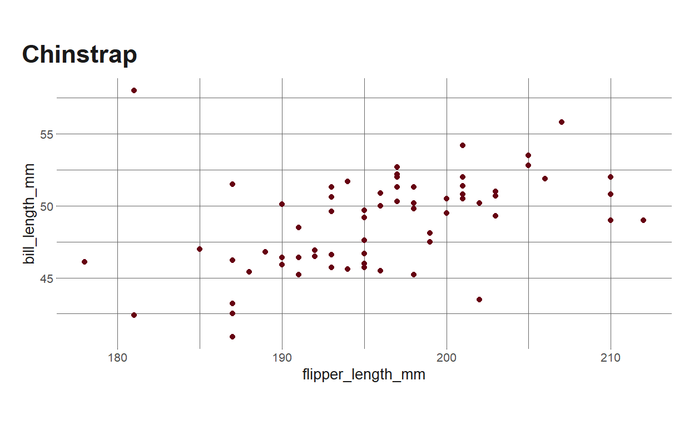
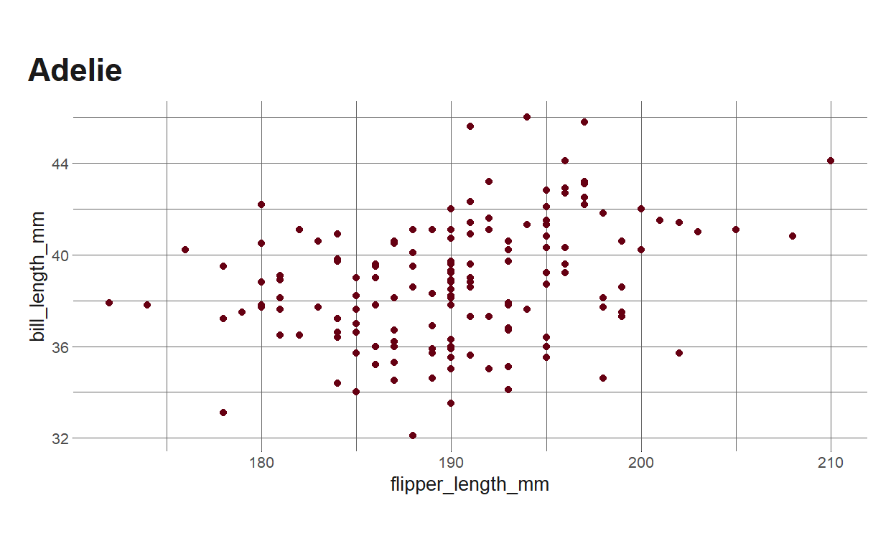
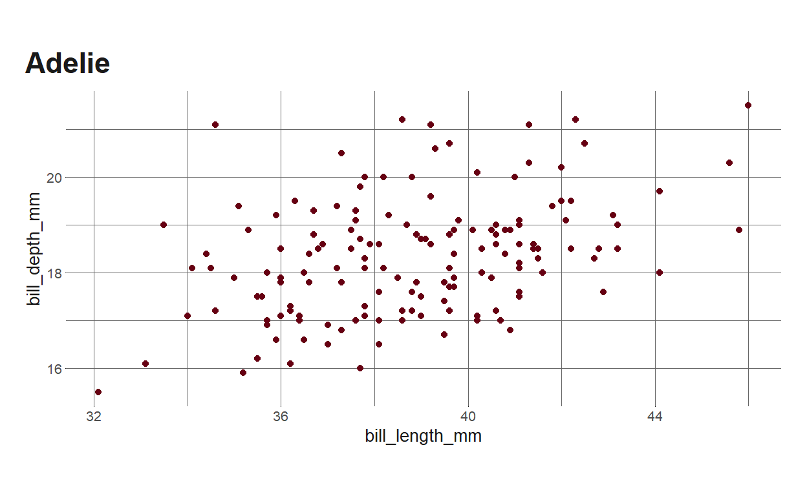

Recently, I was working on creating parameterized reports for all of the schools in the division where I work. The basic idea was to provide school leadership teams with individualized reports on several (common) key metrics that they could use to both 1) reflect on the previous year(s) and 2) set goals for the upcoming year(s).
The beauty of parameterized reporting via RMarkdown is that you can build a template report, define some parameters that will vary within each iteration of the report, and then render several reports all from a single template along with a file that will loop (or purrr::walk()) through the parameters. (If you want to learn more about parameterized reporting, the always-incredible Alison Hill has a recent-ish tutorial on them that you can find here). In my case, this meant creating one template for all 65+ schools and then looping through a function that rendered the report for each school. Sounds great, right?
See, what had happened was…

This workflow is great…when it works. Except it doesn’t always. This isn’t to say that {rmarkdown} mysteriously breaks or anything, but rather that when you create these reports using real (read: usually messy) data, and when you’re trying to present a lot of data in a report, the probability that one of your iterations throws an error increases. This is especially true when you work in a school division and the integrity of your data has been absolutely ravaged by COVID during the past ~18 months. When this happens, instead of watching the text zip by on your console as all of your reports render like they’re supposed to, you end up hunting through the data for each individual school wondering why calculating a particular metric threw an error. Which is like, not nearly as much fun.
So what can we do about this?
Fortunately, we can get around this by making “safe” versions of our functions. What exactly that means will vary from function to function and from use case to use case, but generally it means wrapping a function in another function that can facilitate error handling (or prevent errors from occuring). In some cases, it might mean using purrr::safely() or purrr::possibly() to capture errors or provide default values to the functions. In other cases, it might mean writing your own wrapper (which is what I’ll demonstrate below) to deal with errors that pop up. Regardless of the exact route you go, the goal here is to prevent errors that would otherwise stop your document(s) from rendering.
Let’s see this in action.
Setup
I’m not actually going to create “real” parameterized reports here, but I’ll illustrate the principle using data from {palmerpenguins} and some ggplots. First, I’ll load some packages and set some options and whatnot, plus also take a peek at the penguins data we’ll be using.
knitr::opts_chunk$set(echo = TRUE)
library(palmerpenguins) #data on penguins
library(tidyverse) #you all know what this is
library(eemisc) #personal ggplot themes
library(harrypotter) #colors
library(reactable)
herm <- harrypotter::hp(n = 1, option = "HermioneGranger")
opts <- options(
ggplot2.discrete.fill = list(
harrypotter::hp(n = 3, option = "HermioneGranger"),
harrypotter::hp(n = 7, option = "Always")
)
)
theme_set(theme_ee())
glimpse(penguins)
Rows: 344
Columns: 8
$ species <fct> Adelie, Adelie, Adelie, Adelie, Adelie, Ad~
$ island <fct> Torgersen, Torgersen, Torgersen, Torgersen~
$ bill_length_mm <dbl> 39.1, 39.5, 40.3, NA, 36.7, 39.3, 38.9, 39~
$ bill_depth_mm <dbl> 18.7, 17.4, 18.0, NA, 19.3, 20.6, 17.8, 19~
$ flipper_length_mm <int> 181, 186, 195, NA, 193, 190, 181, 195, 193~
$ body_mass_g <int> 3750, 3800, 3250, NA, 3450, 3650, 3625, 46~
$ sex <fct> male, female, female, NA, female, male, fe~
$ year <int> 2007, 2007, 2007, 2007, 2007, 2007, 2007, ~Split Data
If you’re not familiar with this dataset, it contains data on a few hundred penguins, and you can learn more here. One feature of this dataset is that it has data on three different species of penguins: Adelie, Gentoo, and Chinstrap. So, let’s imagine we wanted to provide separate reports for each species of penguin. To do this, let’s first divide our data up into separate dataframes to emulate a potential workflow of creating parameterized reports.
List of 3
$ Adelie : tibble[,8] [152 x 8] (S3: tbl_df/tbl/data.frame)
..$ species : Factor w/ 3 levels "Adelie","Chinstrap",..: 1 1 1 1 1 1 1 1 1 1 ...
..$ island : Factor w/ 3 levels "Biscoe","Dream",..: 3 3 3 3 3 3 3 3 3 3 ...
..$ bill_length_mm : num [1:152] 39.1 39.5 40.3 NA 36.7 39.3 38.9 39.2 34.1 42 ...
..$ bill_depth_mm : num [1:152] 18.7 17.4 18 NA 19.3 20.6 17.8 19.6 18.1 20.2 ...
..$ flipper_length_mm: int [1:152] 181 186 195 NA 193 190 181 195 193 190 ...
..$ body_mass_g : int [1:152] 3750 3800 3250 NA 3450 3650 3625 4675 3475 4250 ...
..$ sex : Factor w/ 2 levels "female","male": 2 1 1 NA 1 2 1 2 NA NA ...
..$ year : int [1:152] 2007 2007 2007 2007 2007 2007 2007 2007 2007 2007 ...
$ Chinstrap: tibble[,8] [68 x 8] (S3: tbl_df/tbl/data.frame)
..$ species : Factor w/ 3 levels "Adelie","Chinstrap",..: 2 2 2 2 2 2 2 2 2 2 ...
..$ island : Factor w/ 3 levels "Biscoe","Dream",..: 2 2 2 2 2 2 2 2 2 2 ...
..$ bill_length_mm : num [1:68] 46.5 50 51.3 45.4 52.7 45.2 46.1 51.3 46 51.3 ...
..$ bill_depth_mm : num [1:68] 17.9 19.5 19.2 18.7 19.8 17.8 18.2 18.2 18.9 19.9 ...
..$ flipper_length_mm: int [1:68] 192 196 193 188 197 198 178 197 195 198 ...
..$ body_mass_g : int [1:68] 3500 3900 3650 3525 3725 3950 3250 3750 4150 3700 ...
..$ sex : Factor w/ 2 levels "female","male": 1 2 2 1 2 1 1 2 1 2 ...
..$ year : int [1:68] 2007 2007 2007 2007 2007 2007 2007 2007 2007 2007 ...
$ Gentoo : tibble[,8] [124 x 8] (S3: tbl_df/tbl/data.frame)
..$ species : Factor w/ 3 levels "Adelie","Chinstrap",..: 3 3 3 3 3 3 3 3 3 3 ...
..$ island : Factor w/ 3 levels "Biscoe","Dream",..: 1 1 1 1 1 1 1 1 1 1 ...
..$ bill_length_mm : num [1:124] 46.1 50 48.7 50 47.6 46.5 45.4 46.7 43.3 46.8 ...
..$ bill_depth_mm : num [1:124] 13.2 16.3 14.1 15.2 14.5 13.5 14.6 15.3 13.4 15.4 ...
..$ flipper_length_mm: int [1:124] 211 230 210 218 215 210 211 219 209 215 ...
..$ body_mass_g : int [1:124] 4500 5700 4450 5700 5400 4550 4800 5200 4400 5150 ...
..$ sex : Factor w/ 2 levels "female","male": 1 2 1 2 2 1 1 2 1 2 ...
..$ year : int [1:124] 2007 2007 2007 2007 2007 2007 2007 2007 2007 2007 ...Great, so now we have a separate dataframe for each penguin species.
Create a Plot
Now, imagine we want to create a ggplot to include in each of our reports. To illustrate this, let’s just do a scatterplot of flipper length by bill length for Adelie penguins. This is a fairly basic scatterplot, but it works for our purposes.
ggplot(split_df[[1]], aes(x = flipper_length_mm, y = bill_length_mm)) +
geom_point(color = herm) +
labs(
title = "Adelie"
)

And we can do the same thing for Chinstrap penguins:
ggplot(split_df[[2]], aes(x = flipper_length_mm, y = bill_length_mm)) +
geom_point(color = herm) +
labs(
title = "Chinstrap"
)

Good so far, right? Our next step might be to define a function to make this plot. Although this is a fairly basic plot, writing a function still saves us a little bit of typing, and it will prove useful later when we need to wrap it, so let’s go ahead and write our function.
make_penguin_plot <- function(df) {
title <- as.character(unique(df$species))
ggplot(df, aes(x = flipper_length_mm, y = bill_length_mm)) +
geom_point(color = herm) +
labs(
title = title
)
}
make_penguin_plot(split_df[[1]])

So what if something goes wrong?
Let’s imagine, now, that we don’t have measurements of Gentoo penguins’ bill lengths. Maybe the bill-length-measuring machine was broken on the one day we were going to take their measurements. Or maybe all of them were especially bite-y and wouldn’t let us measure their bills (I have no clue if penguins actually bite).
#dropping the bill_length measurement from the Gentoo data
split_df[[3]] <- split_df[[3]] %>%
select(-bill_length_mm)
Now what happens when we try to make our penguin plot?
make_penguin_plot(split_df[[3]])
#produces message 'Error: Column `bill_length_mm` not found in `.data`'
Oh no! An error! In this contrived example here, I’m just showing you the error message produced, but if you’re actually rendering a report, this will stop your report from rendering, which isn’t great.

If this happens to you, you have a few options. You might create a separate report template just for Gentoo penguins, although this doesn’t seem ideal, because it defeats the point of having a template if you need to make separate ones every time an exception pops up. You could drop this metric from your main report template if the data seems problematic (which is a good thing to investigate). You could potentially use purrr::possibly() or purrr::safely() if you have a default value you want to use.
Another option is to write your own little wrapper to make your function “safe”, which I’ll show below.
Wrap that function!
The best part here is that this is, in the very specific case, it’s fairly straightforward. I’m just going to check the names of the variables in the data I’m passing into the function to see if flipper length and bill length are present in the data, then execute make_penguin_plot() if they are and print out “Whoops!” if they’re not.
safe_penguin_plot <- function(df) {
nms <- names(df)
if (all(c("flipper_length_mm", "bill_length_mm") %in% nms)) {
make_penguin_plot(df)
} else print("Whoops! Looks like you don't have all of the data you need for this plot!")
}
safe_penguin_plot(split_df[[1]])

safe_penguin_plot(split_df[[3]])
[1] "Whoops! Looks like you don't have all of the data you need for this plot!"Generalize your functions using {rlang}
You can also imagine generalizing this to accept other variables. This requires some quoting/unquoting and diving into {rlang}, which is something I’ve been trying to learn lately:
gen_penguin_plot <- function(df, xvar, yvar) {
title <- as.character(unique(df$species))
x <- enexpr(xvar) #captures xvar as an expression
y <- enexpr(yvar) #captures yvar as an expression
ggplot(df, aes(x = !!x, y = !!y)) +
geom_point(color = herm) +
labs(
title = title
)
}
gen_penguin_plot(split_df[[1]], bill_length_mm, bill_depth_mm)

There’s a little bit more work in making the more generalized version “safe” that has to do with handling the quoted expressions/environments, especially since we’re passing them into another function:
safe_gen_plot <- function(df, xvar, yvar) {
nms <- names(df)
vec <- c(deparse(enexpr(xvar)), deparse(enexpr(yvar)))
x <- enquo(xvar)
y <- enquo(yvar)
if (all(vec %in% nms)) {
gen_penguin_plot(df, xvar = !!x, yvar = !!y)
} else print("Whoops! Looks like you don't have all of the data you need for this plot!")
}
safe_gen_plot(split_df[[1]], bill_length_mm, bill_depth_mm)

safe_gen_plot(split_df[[3]], bill_length_mm, bill_depth_mm)
[1] "Whoops! Looks like you don't have all of the data you need for this plot!"Conclusion
By implementing a simple (or less simple, depending on how generalizable you want your function to be) wrapper function, we can replace errors with a message to be displayed when rendering a report. I can’t emphasize how much time this approach has saved me when creating parameterized reports, especially since our data has gotten so wonky due to COVID and this provides a flexible way to handle all of this craziness.
Hope this helps others who might be in similar positions!